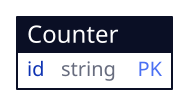

Counter (/)

One seeded tab row; a click wakes count, which tells the buttons apart by element id.
One tab entity, read and written by one screen. A tab entity and the handler only it reaches are machine-checked and owe this document nothing.

entities: Counter
One seeded tab row; a click wakes count, which tells the buttons apart by element id.
Escape hatches: none. No container, WASM unit, vendored component or external endpoint; every line of app code is a handler the terminal runs in a compartment.
Android host beside the program. The phone runs the program's own shell/handlers/count.js in QuickJS under SES and draws the counter with DivKit, from the Gradle project in android/; its toolchain and @android verbs come from the pronto-plugins Android host. Pronto does not yet know the target, so the phone's screen is drawn by the host, not compiled from the markup.